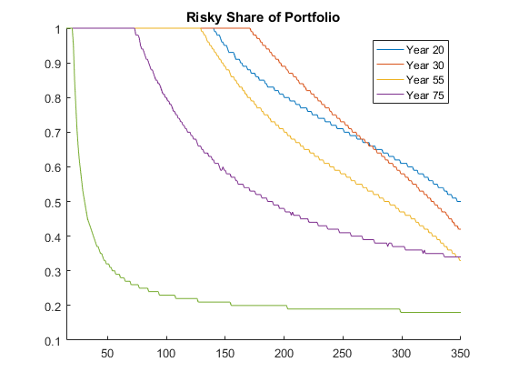

Assume a worker enters the model at age 20 and starts working. Every model period an agent makes saving and investment decisions. The solution is found starting with a terminal condition backwards using value function iteration. Code is adapted from Fortran Code by Cocco et al. (2005).
Matlab function using high-dimmensional arrays [download]
Matlab function (direct conversion from original code in Fortran) [download]
Fortran function [download]
clearvars %!!!!!!!!!!!!!!!!!!!!!!!! %! Exogenous parameters ! %!!!!!!!!!!!!!!!!!!!!!!!! %AGE=80+1; AGE0=1; Ret_age_early=42; Ret_age_norm=45; Ret_age_late=50; eta=10; eps=0.00001; beta=0.96; %Discretized grids RS_grid=0:0.01:1; LW_grid=4:404; C_grid=0:0.25:375; N_grid=0:0.2:0.8; infinity=-1e+10; %!!!!!!!!!!!!!!!!!!!!!! %! INVESTMENT RETURNS ! %!!!!!!!!!!!!!!!!!!!!!! sigma_r=0.157^2; grid(1,1)= -1.73205080756887; grid(2,1)= 0.0; grid(3,1)= 1.73205080756887; gr=grid*sigma_r^0.5; gret = 1.06+gr; RiskyReturns(1,1,:)=[gret(1),gret(2),gret(3)]; Prob=[0.1666666666666 0.6666666666666 0.1666666666666]; RiskFree=1.02; ret_shock_states=3; %!!!!!!!!!!!!!!!! %! LABOR INCOME ! %!!!!!!!!!!!!!!!! grid(1,1)= -1.73205080756887; grid(2,1)= 0.0; grid(3,1)= 1.73205080756887; sigt_y=0.0738; eyt=grid*sigt_y^0.5; f_y=zeros(length(eyt),45); inc_shock_states=3; Prob2=[1/6,4/6,1/6]; ret_fac=0.68212; a=-2.170042+2.700381; b1=0.16818; b2=-0.0323371/10; b3=0.0019704/100; for ind1=21:65 avg = exp(a+b1*ind1+b2*ind1^2+b3*ind1^3); Income(:,ind1-20) = avg*exp(eyt(:,1)); end Ret_income= ret_fac.*avg; %!!!!!!!!!!!!!!!!!!! %! TERMINAL PERIOD: Age 101 %!!!!!!!!!!!!!!!!!!! VR1(:,1)=Utility(LW_grid,0,1,eta); opt_cons_VR(:,81)=LW_grid; opt_risky_VR(:,81)=0; %!!!!!!!!!!!!!!!!!!!!!! %! RETIREMENT PERIODS ! %!!!!!!!!!!!!!!!!!!!!!! for age=99:-1:65 %for ind1=2:length(RS_grid) % RS_grid(ind1)=RS_grid(ind1)-rand(1)/1e+4; %end for LW0=1:length(LW_grid) CurrentWealth=LW_grid(LW0); C_grid_new=C_grid; RS_grid_new=RS_grid; Investment=repmat(((LW_grid(LW0)-C_grid_new)'),1,length(RS_grid_new),ret_shock_states); Investment=Investment.*(Investment>=0); C_grid_new=C_grid_new.*((LW_grid(LW0)-C_grid_new)>=0); Returns=repmat(RS_grid_new,length(C_grid_new'),1,ret_shock_states).*repmat(RiskyReturns,length(C_grid_new),length(RS_grid_new),1)... +(1-repmat(RS_grid_new,length(C_grid_new'),1,ret_shock_states)).*repmat(RiskFree,length(C_grid_new),length(RS_grid_new),ret_shock_states); FutureWealth=Investment.*Returns + repmat(Ret_income,length(C_grid_new'),length(RS_grid_new),ret_shock_states); FutureWealth=max(FutureWealth,min(LW_grid)); FutureWealth=min(FutureWealth,max(LW_grid)); VR1_1=Prob(1)*interp1(LW_grid',VR1,FutureWealth(:,:,1),'spline'); VR1_2=Prob(2)*interp1(LW_grid',VR1,FutureWealth(:,:,2),'spline'); VR1_3=Prob(3)*interp1(LW_grid',VR1,FutureWealth(:,:,3),'spline'); VR=repmat(Utility(C_grid_new',0,1,eta),1,length(RS_grid_new)) + beta.* ( VR1_1 + VR1_2 + VR1_3 ); VR = max(VR,infinity); [ind_cons,ind_risky]=find(max(VR(:))==VR,1,'first'); opt_cons_VR(LW0,age)=C_grid_new(ind_cons); opt_risky_VR(LW0,age)=RS_grid_new(ind_risky); opt_Invest_VR(LW0,age)=LW_grid(LW0)-opt_cons_VR(LW0,age); maxVR(LW0,1)=max(VR(:)); end VR1(:,1)=maxVR; % age %Uncomment this line to see the progress as the algorithm progresses end %!!!!!!!!!!!!!!!!!!! %! WORKING PERIODS ! %!!!!!!!!!!!!!!!!!!! for age=64:-1:20 for LW0=1:length(LW_grid) CurrentWealth=LW_grid(LW0); C_grid_new=C_grid; RS_grid_new=RS_grid; Investment=repmat((LW_grid(LW0)-C_grid_new)',1,length(RS_grid_new),ret_shock_states,inc_shock_states); Returns=repmat(RS_grid_new,length(C_grid_new'),1,ret_shock_states,inc_shock_states).*repmat(RiskyReturns,length(C_grid_new),length(RS_grid_new),1,inc_shock_states)... +(1-repmat(RS_grid_new,length(C_grid_new'),1,ret_shock_states,inc_shock_states)).*repmat(RiskFree,length(C_grid_new),length(RS_grid_new),ret_shock_states,inc_shock_states); FutureWealth=Investment.*Returns + repmat(reshape(Income(:,age+1-20),1,1,1,inc_shock_states),length(C_grid_new'),length(RS_grid_new),ret_shock_states,1); FutureWealth=max(FutureWealth,min(LW_grid)); FutureWealth=min(FutureWealth,max(LW_grid)); VR1_11=Prob(1)*Prob2(1)*interp1(LW_grid',VR1,FutureWealth(:,:,1,1),'spline'); VR1_12=Prob(1)*Prob2(2)*interp1(LW_grid',VR1,FutureWealth(:,:,1,2),'spline'); VR1_13=Prob(1)*Prob2(3)*interp1(LW_grid',VR1,FutureWealth(:,:,1,3),'spline'); VR1_21=Prob(2)*Prob2(1)*interp1(LW_grid',VR1,FutureWealth(:,:,2,1),'spline'); VR1_22=Prob(2)*Prob2(2)*interp1(LW_grid',VR1,FutureWealth(:,:,2,2),'spline'); VR1_23=Prob(2)*Prob2(3)*interp1(LW_grid',VR1,FutureWealth(:,:,2,3),'spline'); VR1_31=Prob(3)*Prob2(1)*interp1(LW_grid',VR1,FutureWealth(:,:,3,1),'spline'); VR1_32=Prob(3)*Prob2(2)*interp1(LW_grid',VR1,FutureWealth(:,:,3,2),'spline'); VR1_33=Prob(3)*Prob2(3)*interp1(LW_grid',VR1,FutureWealth(:,:,3,3),'spline'); VR=repmat(Utility(C_grid_new',0,1,eta),1,length(RS_grid_new)) + beta.* ( VR1_11+VR1_12+VR1_13+VR1_21+VR1_22+VR1_23+VR1_31+VR1_32+VR1_33 ); [opt_cons_VR(LW0,age),opt_risky_VR(LW0,age)]=find(max(max(VR))==VR,1,'first'); opt_cons_VR(LW0,age)=C_grid_new(opt_cons_VR(LW0,age)); opt_risky_VR(LW0,age)=RS_grid_new(opt_risky_VR(LW0,age)); opt_Invest_VR(LW0,age)=LW_grid(LW0)-opt_cons_VR(LW0,age); maxVR(LW0,1)=max(VR(:)); end VR1(:,1)=maxVR; % age %Uncomment this line to see the progress as the algorithm progresses end %!!!!!!!!!!!!!! %! Figure 2-B ! %!!!!!!!!!!!!!! figure; hold on; figure; hold on; plot(1:400,opt_risky_VR(1:400,20)); plot(1:400,opt_risky_VR(1:400,30)); plot(1:400,opt_risky_VR(1:400,55)); plot(1:400,opt_risky_VR(1:400,75)); plot(1:400,opt_risky_VR(1:400,99)); xlim([15 350]); title('Risky Share of Portfolio') legend('Year 20','Year 30','Year 55','Year 75','Year 99') %!!!!!!!!!!!!! %! Functions ! %!!!!!!!!!!!!! function[u]=Utility(c,n,gamma,eta) u=((((c).^(gamma)).*(1-n).^(1-gamma)).^(1-eta))./(1-eta); %Last good one end %!!!!!!!!!!!!!!!!!!!!!! %! The End of Program ! %!!!!!!!!!!!!!!!!!!!!!!
